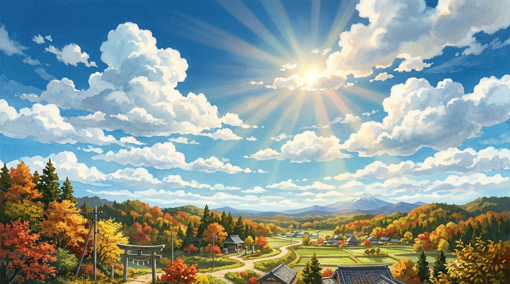
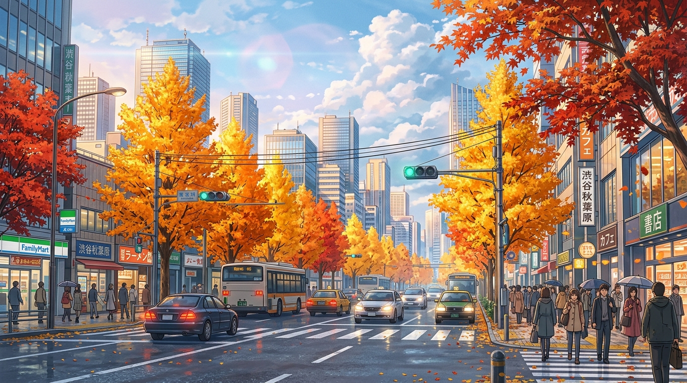
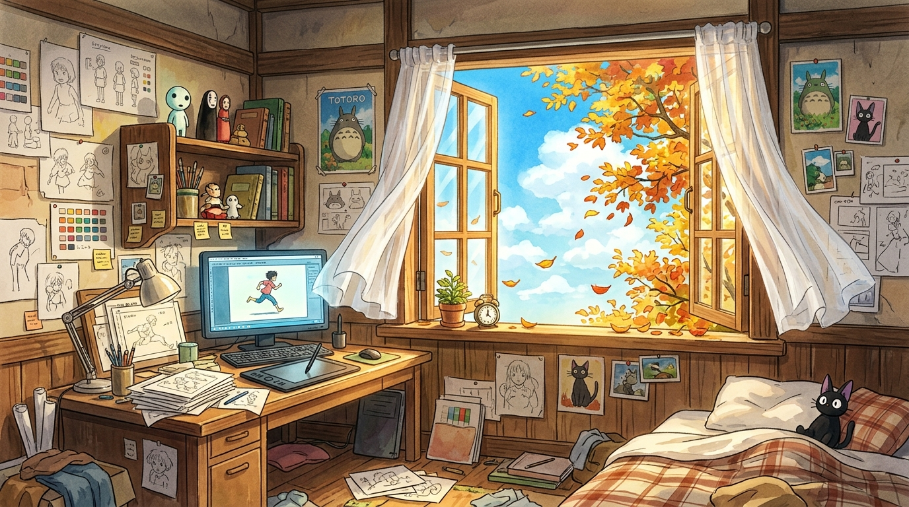
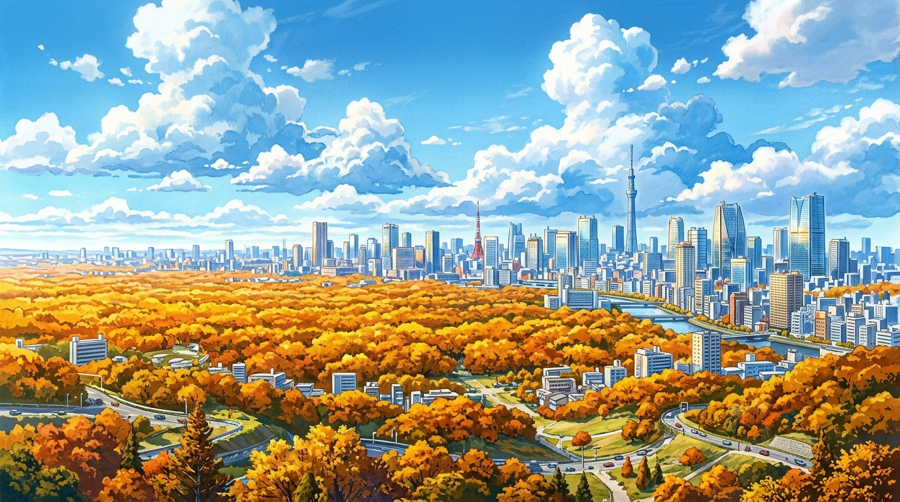
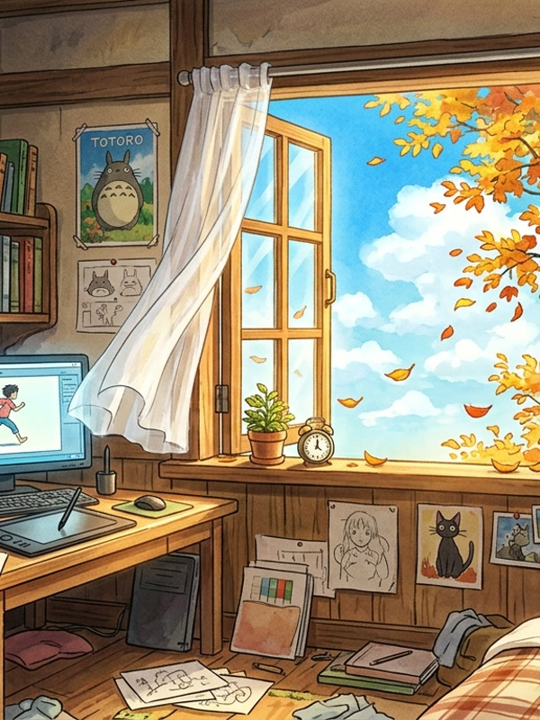

We paint the city
one frame at a time.
We make animated films the slow way: pencil first, paint second, software last.




We make animated films the slow way: pencil first, paint second, software last.
Eleven artists who still start on paper. Every shot is painted in layers, so it can breathe, move and change without starting over.
From a fifteen-second loop to a seven-minute short, for musicians, brands and international animation festivals.
Sunlight through the window, flutter of sketches on the wall, and the patient cadence of hand-drawn frames.

